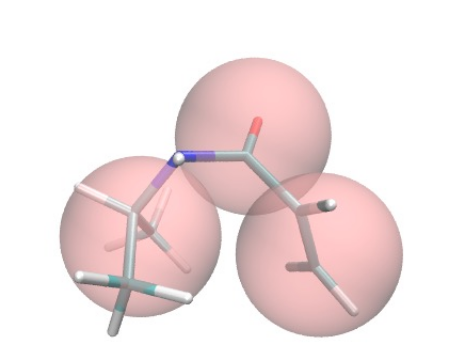

Mapping Functional Monomers
A coarse-graining approach for MIP development
Coarse-graining functional monomers using Martini provides us a flexible and fast approach to developing Molecularly Imprinted Polymers (MIPs). This approach saves time, side-steps force field mixing, and when paired with our pseudo polymerization approach, allows for functional development of MIPs in GROMACS. This section will serve as a tutorial for mapping your own functional monomers to Martini, should they not be available in the FM Martini Library.
This process is a more automated version of the one alongside the Martini 3 Small Molecules Github page, available here. Our automation scripts simplify the generation processes, and allow for manual or automatic convergence functions (assuming you have set everything up properly).
Find the preprint here : ...
Atomistic Representation
The first step of the process is the accurate representation of the fully atomistic structure, which we will later sample
to generate target bonded, angle, and dihedral distributions. For chemical structure representations,
MarvinSketch by ChemAxon ( or
ChemSketch by ACDLabs) is a convenient tool, and has a free for academic purposes (with attibution in publications).
For 3D representation, Avogadro is a good tool and supports Mac, Windows, and Linux.
 Let's use Benzyl Methacrylate as our example. It contains a benzene ring, as well as ester and methyl functional groups
which need to be maintained in coarse-graining. Avogadro allows the used to draw in a similar manner to Marvin, and the structure
may be optimized to generate an input for Gromacs.
Let's use Benzyl Methacrylate as our example. It contains a benzene ring, as well as ester and methyl functional groups
which need to be maintained in coarse-graining. Avogadro allows the used to draw in a similar manner to Marvin, and the structure
may be optimized to generate an input for Gromacs.
First, we need to make our folder structure. Make the main folder an all uppercase acronym for the FM, in our case BZMA.
In this folder, put three other folders: atmsrc, data, and work. Then create the structure in Avogadro and name it {ACRONYM}.mol2, in this case BZMA.mol2. Run cg_prep.sh using bash,
where it will call a python script and print a {ACRONYM}_fix.mol2, in this case BZMA_fix.mol2. Next, we need to get a stream file.
Head to cgenff (now a part of SILCSBIO, and you will need to make an account), where we will upload the _fix.mol2 file,
run the system, and download to {ACRONYM}_fix.str, in this case BZMA_fix.str, which should be placed in the atmsrc folder. Finally, run cg_prep.sh again using bash.
Now the system is ready for production! Run fm_prod.sh using bash and a production run in Gromacs will occur.
Coarse-graining
Following the representation of an atomistic model, we can develop the coarse-grained model. Per the Martini tutorial,
all heavy atoms and their hydrogens contribute to the center-of-geometry (COG) position used later in the distribution
development and convergence steps. This may be performed through cgbuilder.
 First though, we will begin on paper and choose beads based on the functional groups of the molecule. We can use five beads
to represent the Benzyl Methacrylate, with one bead each for the ester and methyl functional groups, and three beads
contributing to the benzene ring. These beads are chosen from Martini 3 Small Molecules.
First though, we will begin on paper and choose beads based on the functional groups of the molecule. We can use five beads
to represent the Benzyl Methacrylate, with one bead each for the ester and methyl functional groups, and three beads
contributing to the benzene ring. These beads are chosen from Martini 3 Small Molecules.
So what motivates each selection? Beginning with the methyl group, SC2 is small (S), being represented by 3 heavy atoms.
C2 is chose as the structure is tertiary, following the documentation of Martini. Moving to the ethyl group, we use the regular bead N4a
as it contains 4 heavy atoms, has polarity, and is an electron acceptor. Finally, the benzene ring is comprised of three TC5 beads, where T
is Tiny, as this bead only has two heavy atoms. The C5 representation is chosen as the carbon contains one double bond and one standard bond.
Now comes cgbuilder, where we will assign the respective heavy atoms and their hydrogens to each bead. Download the three resulting files,
which will be named cgbuilder.map, cgbuilder.gro, and cgbuilder.ndx. Rename all to the lowercase acryonym, (i.e. bzma.extension) and place into the data folder.
Distribution Development
The first step of the process is the accurate representation of the fully atomistic structure, which we will later sample to generate target bonded, angle, and dihedral distributions.
Convergence
Convergence on the atomistic distributions by the CG distribution should be performed in the following series:
1 : Bonds
2 : Angles
3 : Dihedrals
Bonds will end up dictating angles and influencing dihedrals, and are therefore the highest priority. One example is
a cyclical functional group, such as pyrrole or benzene. A benzene ring may be represented by three TC5 beads, and the
angles between the beads will be dictated by the bond lengths (since it is a triangle afterall).